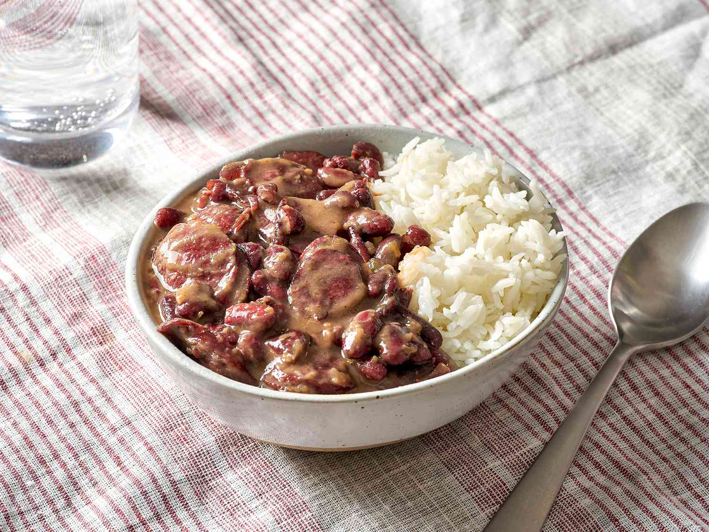

Red Beans and Rice

Description
Looking for a hearty rice dish with a kick? This authentic Louisiana red beans and rice is a budget-friendly recipe with incredible Cajun flavor. Andouille sausage joins garden-fresh vegetables, zesty spices, and long grain rice in this deliciously down-home recipe. Learn all about this boldly savory dish, including tips on choosing the best beans and what to serve alongside it.
Ingredients
- 1lb smoked sausage, sliced
- 1 onion, chopped, divided
- 1 green bell pepper, chopped, divided
- 1 jalapeno pepper, finely diced, divided
- 2 cups water
- 2 cubes chicken bouillon
- 1 tbsp salt-free garlic and herb seasoning
- 1 tbsp Cajun seasoning blend
- 1 tsp red pepper flakes
- 1 bay leaf
- 3 (16 oz) cans kidney beans, drained and rinsed
- 1 (14.5 ounce) can diced tomatoes
- salt to taste
- 3 cups cooked white rice
Steps
- Combine sausage, half the onion, half the green bell pepper, half the jalapeno pepper, water, chicken bouillon, garlic and herb seasoning, Cajun seasoning blend, red pepper flakes, and bay leaf in a large stockpot; Bring to boil and cook, stirring occasionally, until liquid is reduced by half, 15 to 20 minutes.
- Mix kidney beans, tomatoes, remaining onion, remaining green bell pepper, and remaining jalapeno pepper into the sausage mixture; season with salt. Bring to a boil, reduce heat, and simmer until kidney bean mixture is thickened, 15 to 20 minutes. Remove and discard bay leaf.
- Spoon 1/2 cup cooked rice into 6 serving bowls; top with kidney bean mixture.